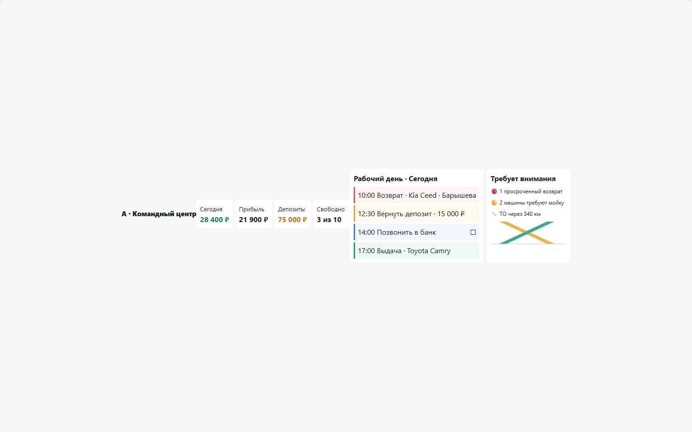
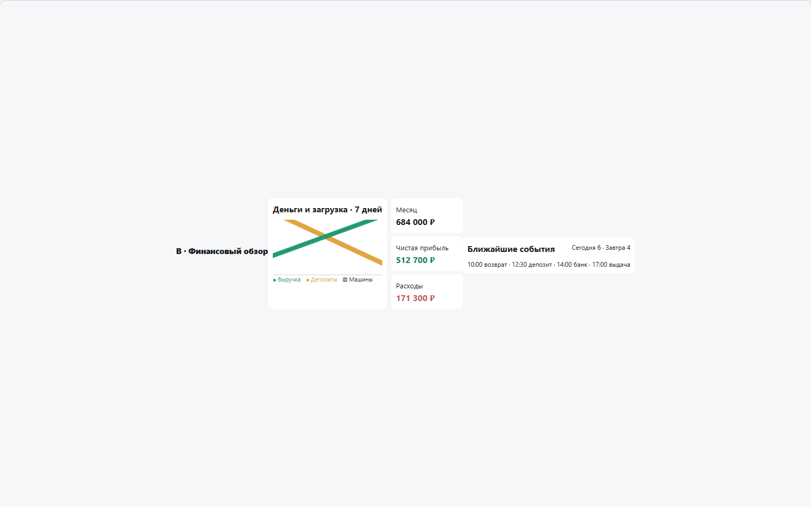
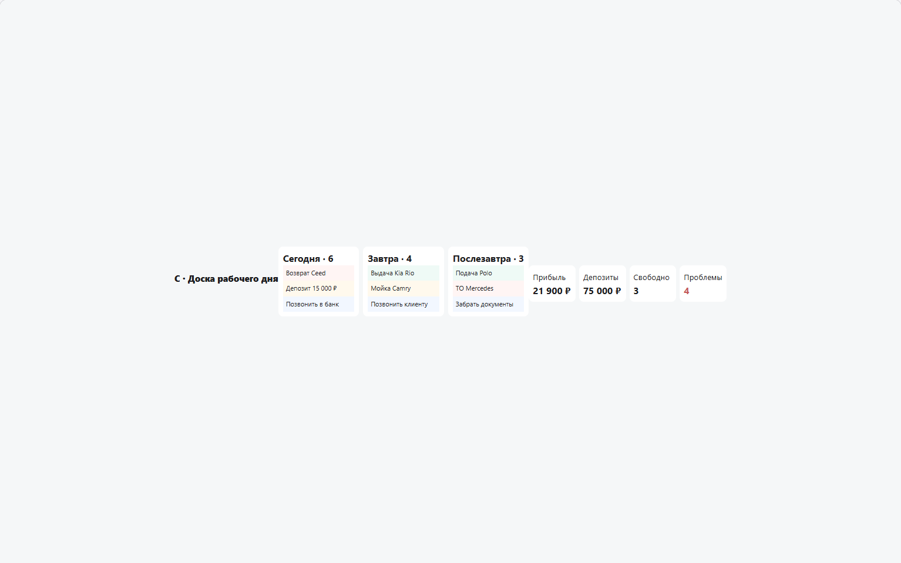

СУПА ПРО — главный экран
Три схемы для выбора структуры утреннего рабочего экрана.
A · Командный центр — рекомендация

B · Финансовый обзор

C · Сегодня, завтра, послезавтра

Три схемы для выбора структуры утреннего рабочего экрана.


